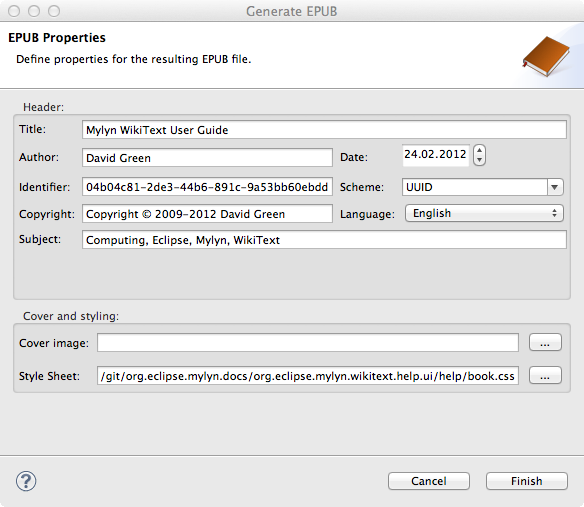
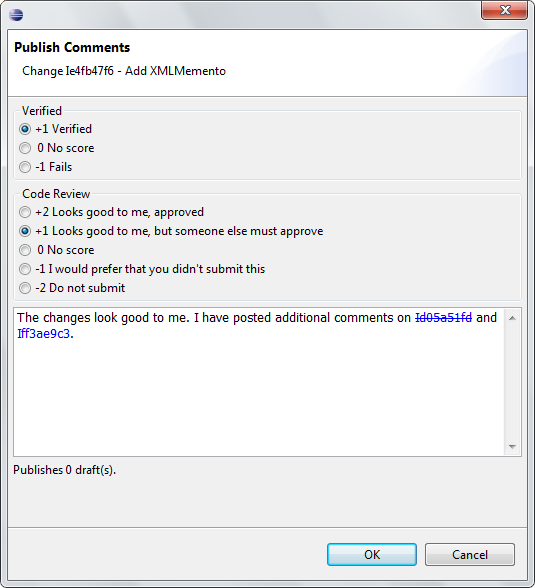
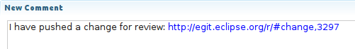

|
Release |
Resolved
|
Community Contributions |
3.8.1
July 27, 2012 |
13
bugs |
Service Release
Includes:
Mylyn 3.8.1,
Mylyn Builds 1.0.1,
Mylyn Commons 3.8.1,
Mylyn Context 3.8.1,
Mylyn Docs 1.7.1,
Mylyn Reviews 1.0.1.
Mylyn Tasks 3.8.1,
Mylyn Versions 1.0.1.
|
3.8
June 27, 2012 |
88
bugs |
Benjamin Muskalla contributed several API improvements for the Tasks framework. Additional contributions were provided by Robert Munteanu, Manuel Doninger, Lucas Panjer and Sebastien Dubois.
Includes:
Mylyn 3.8,
Mylyn Builds 1.0,
Mylyn Commons 3.8,
Mylyn Context 3.8,
Mylyn Docs 1.7,
Mylyn Reviews 1.0.
Mylyn Tasks 3.8,
Mylyn Versions 1.0.
|
3.7.1
April 25, 2012 |
16
bugs |
Service release.
Includes:
Mylyn 3.7.1,
Mylyn Builds 0.9.1,
Mylyn Commons 3.7.1,
Mylyn Context 3.7.1,
Mylyn Docs 1.6.1,
Mylyn Reviews 0.9.1.
Mylyn Tasks 3.7.1,
Mylyn Versions 0.9.1.
|
3.7
March 21, 2012 |
341
bugs |
Kevin Sawicki contributed several UI enhancements for the Gerrit and Hudson connectors and Torkild U. Resheim provided Wiki markup to EPUB conversion support.
Additional contributions were provided by Manuel Doninger, Robert Munteanu, Thomas Ehrnhoefer, Tomasz Zarna, Abner Ballardo, Jan Mauersberger, Nicolas Bros, Igor Malinin, John Arthorne, Patrick Boisclair, Mike Wu,
Maarten Meijer and Christian Trutz.
Includes:
Mylyn 3.7,
Mylyn Builds 0.9,
Mylyn Commons 3.7,
Mylyn Context 3.7,
Mylyn Docs 1.6,
Mylyn Reviews 0.9.
Mylyn Tasks 3.7,
Mylyn Versions 0.9.
|
|
Wiki Markup to EPUB Conversion
|
WikiText markup in all supported formats (Textile, MediaWiki,
Creole, Confluence etc.) can be converted to XHTML and packaged as
EPUB using a one
step wizard found in the file popup menu. Simply right click on a
markup file and select WikiText > Generate EPUB in order to
start the wizard.

The wizard presents an UI for filling out all
required properties and produces an EPUB compatible with all
reading systems pertaining to the 2.0.1 version of the
specification.
|
|
|
Ant Task for Assembling EPUB Documents
|
If more control and flexibility is required when
assembling EPUBs, the Ant task may be used to this end. It supports
all EPUB features except Digital Rights Management (DRM), fallback
mechanisms for unsupported file formats and multiple root files
within one publication.
Task elements and attributes are laid out similar to the Open
Publication Structure (OPS) format and should be easily
understandable with the OPS
specification in hand. In addition the user guide contains
detailed descriptions on how to use this task.
|
|
|
Support for Creole Markup
|
WikiText now support the Creole markup dialect.
Creole support is part of the WikiText Extras feature and only
available from the Mylyn Docs nightly repository .
|
|
Gerrit 2.3 and Gerrit 2.4
|
Gerrit 2.3 and 2.4 are supported.
|
|
|
Compare Patch Sets
|
To easily review changes between patch sets a
button is now shown below each patch set to compare it with other
patch sets.

The differences are shown in the compare editor making it very easy to navigate through changed files. Comments can be viewed and added inline.
|
|
|
Import Git Repositories
|
EGit provides an import wizard (File > Import > Projects from Git)
for importing of project from Git repositories. When a Gerrit server has been configured the wizard provides a
listing of all Git repositories from that server. This enables simple cloning and importing of available projects.
|
|
|
Hyperlinking for Change IDs
|
References to Gerrit change IDs in the publish dialog and review editor are now hyperlinked.

Additionally, URLs that reference Gerrit changes are opened in the review editor instead of the browser. Gerrit's short URL format is supported as well as full URLs.

|
|
|
Hyperlinking for Link Patterns
|
Comment link patterns specified in the Gerrit
configuration are recognized and hyperlinked in the review editor
and publish dialog. This allows seamless navigation between reviews and tasks without leaving the IDE.
|
|
|
Custom Queries
|
The query page has a field for specifying custom queries. All queries allowed by Gerrit are supported such as querying for all starred reviews.

|
|
|
OpenID Authentication
|
The Gerrit connector supports authentication through OpenID providers. The OpenID provider URL needs to be selected or specified in the repository settings.

The password prompt is displayed in a browser window.

|
|
|
Repository Creation on Fetch
|
When fetching a change set from a Git repository that does not exist in the workspace a dialog is shown to automatically clone the repository.

|
|
|
Author Information for Patch Sets
|
The patch set sections shows author and commit information for each patch set.

|
|
Refresh on View Activation
|
When the Builds is focused it automatically refreshes. This is particularly useful when the view is hidden or in fast-view by default. Refreshing can be controlled through a preference.
|
|
|
Hudson 3.0
|
Hudson 3.0M2 is supported
|
|
|
Hierarchical View of Artifacts
|
The artifacts section of the build editor now shows the folder hierarchy.

|
|
|
Links Open in Builds Editor
|
If a link that points to a Hudson build for a
configured server is clicked, it is opened in the build editor
providing seamless navigation between tasks, reviews and builds.


|
|
|
Authentication Improvements
|
The Hudson connector now uses form-based
authentication to support servers that have Cross Site Request
Forgery prevention enabled. Additionally, the settings page now has
a section for configuring certificate authentication.
|
|
Tasks: Generic Client Manager
|
The RepositoryClientManager class that is now available as API and can be reused by connectors: bug 375076.
|
|
|
Commons: Restructuring and Deprecation
|
The Mylyn Commons components were restructured and provisional packages were promoted to API. Consumers are strongly encouraged
to consume the new APIs for Mylyn 3.7 based extensions. See porting guide for more details.
|
|
|
Commons: URL Handler
|
The org.eclipse.mylyn.commons.ui bundle provides an extension point
for registering handlers that open URLs in rich editors: bug 346046.
|
|
|
Commons: Improved Authentication APIs
|
The repositories framework now support OpenID, HTTP and certificate authentication: bug 317907.
|
|
|
Commons: HttpCore Based Transport Layer
|
The org.eclipse.mylyn.commons.repositories.http.core bundle provides an HttpCore 4.1 based HTTP transport layer that
replaces org.eclipse.mylyn.commons.net: bug 335254.
|
|
|
Docs: API for creating Wiki markup
|
WikiText provides an API for converting content to Wiki markup: bug 357294.
|
|
|
Incubator: Query API for Desktop Search
|
The desktop search integration in the Incubator has API for constructing search queries: bug 354430.
|
|
|
Tasks: Improved Query Page API
|
An enhanced query and search page abstraction is available in AbstractRepositoryQueryPage2. Refresh and Clear buttons are provided by the framework for refreshing the repository configuration and clearing fields.
Additionally, state is automatically persisted for search pages. See bug 310059.
|
|
|
Tasks: Task Activation Listener Extension Point
|
The Tasks framework has an extension point for registering task activation listeners: bug 349924.
|